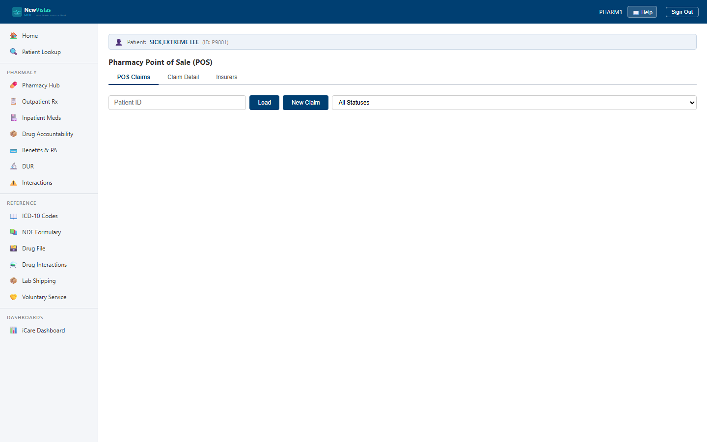

Point-of-Sale Pharmacy Claims RPMS
The Pharmacy POS screen is where you submit insurance claims for dispensed medications, adjudicate them, reverse them, and review claim history — using NCPDP standard BIN/PCN routing. It's the third-party billing layer of the pharmacy. Point-of-Sale is an RPMS module (feature flag PHARMACY_POS) — IHS sites bill third parties at the point of dispense; a plain VistA site can leave it off.
Submit a billing (B1) claim
- In the sidebar, under Pharmacy, open Pharmacy POS (or go to
/pharmacy-pos). The POS Claims tab is active by default. - Enter the Patient ID (e.g.
35) and click Load. - Click New Claim.
- Choose Transaction Type B1 — Billing, then enter the routing (BIN, PCN, NCPDP version) and member details (group number, cardholder ID, relationship code, insurer).
- Enter the drug and pricing — NDC, drug name, quantity dispensed, days supply, date of service, ingredient cost, dispensing fee, and usual & customary (U&C).
- Enter the pharmacy and prescriber identifiers, then click Submit Claim.

The new claim lands in the table with Type B1 (blue badge) and Status Pending (yellow badge). The Ins Paid and Patient Resp columns show a dash until the claim is adjudicated; each row offers View and Adjudicate.
Adjudicate a claim
Click Adjudicate on a pending claim and set the outcome:
- Paid — enter the insurance-paid amount, patient responsibility, copay, and an authorization number. Status turns Paid (green badge) and the Ins Paid / Patient Resp columns fill in.
- Rejected — enter NCPDP rejection codes (e.g.
75= Prior Auth Required,76= Plan Limitations Exceeded) and a note. Status turns Rejected (red badge).
Click View on any claim to see the full record — authorization number, copay, rejection codes, and notes are all preserved.
Reverse a paid claim (B2)
- Click New Claim and choose Transaction Type B2 — Reversal.
- Re-enter the routing, member, and drug details, and supply the Original Claim ID (visible in the original claim's View detail).
- Click Submit Claim. The reversal appears with a B2 badge and Status Pending; adjudicating it reverses the original insurance payment.
Review history & configure insurers
Use the status filter on the POS Claims tab to narrow the list — Pending, Transmitted, Paid, Rejected, Reversed, DuplicatePaid, PartialPay, and Cancelled. The Insurers tab lists configured POS insurers, each with a BIN, PCN, NCPDP version, processor, and Active status; these BIN/PCN values must match what you enter when submitting a claim.